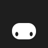
Corpo preenchendo o quadro inteiro, como no GIF. No app, o Image fica com cantos arredondados via clip no QML.
Placa centralizada um pouco abaixo do meio, olhinhos espaçados.

Placa maior e olhos maiores; mais legível em tamanho pequeno.
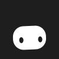
Placa mais larga e baixa, colada embaixo; silhouette achatada.
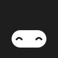
Formato v3 (full-bleed) com paleta e acessório próprios por agente. Escolhidos os favoritos, gero todos os estados.
O agente padrão: carvão + branco, sem cosmético.
Roxo profundo, cartola e gravata-borboleta lavanda.
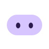
Verde-petróleo, placa menta e óculos redondos dourados.
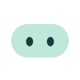
Azul-marinho e boné laranja; o que executa tarefas.
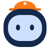
Verde-musgo escuro, placa menta clara e fones laranja.
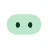
Vinho-magenta, placa rosa-claro e laço rosa.
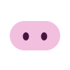
Marrom-café, placa creme e antena laranja.
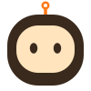